| 5-1. Promotion Poster for the Amsterdam
Open Karatedo Championship, held on 28 November 2004. Participants at
this championship came from several schools from Holland but also from
Denmark and France and even 'all the way' from Japan and Australia! |
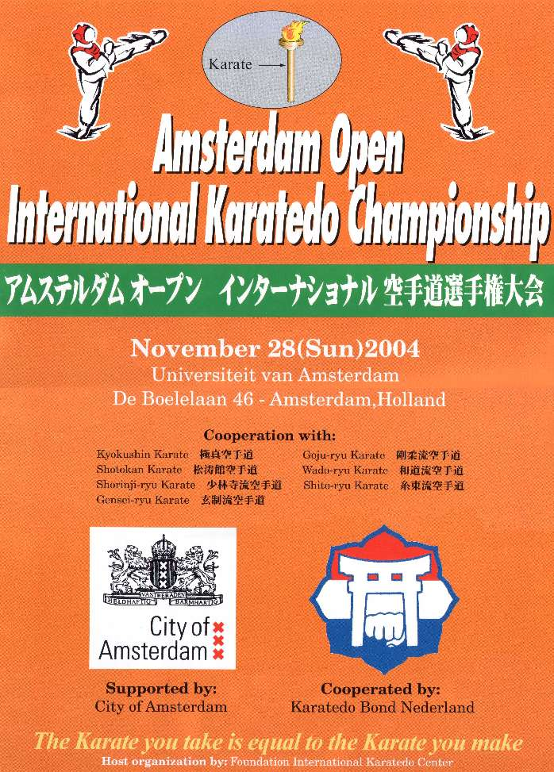 |
| 5-2. Opening of the tournament. |
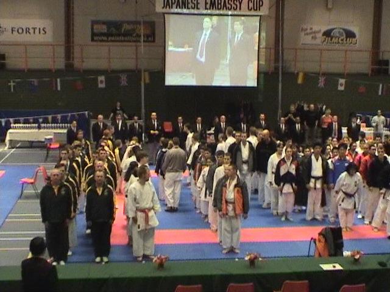 |
| 5-3. Maurice Tehi doing
the Chi-i no Kata. View the movie!! |
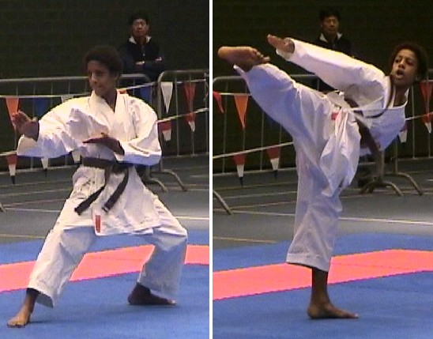 |
| 5-4. Melanie Hertogh showing
a beautiful Mae-geri in the Kata Sansai. |
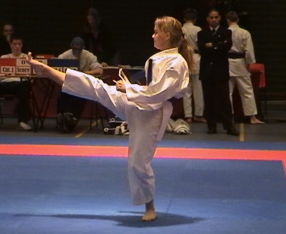 |
| 4-5. Melanie Hertogh and some more of her Sansai no Kata. View the movie!! |
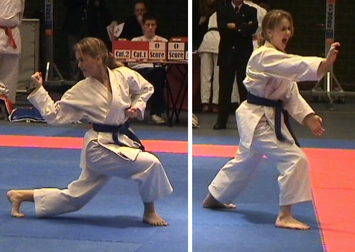 |
| 5-6. Joost v. Bruggen (blue)
in a hot Kumite match. |
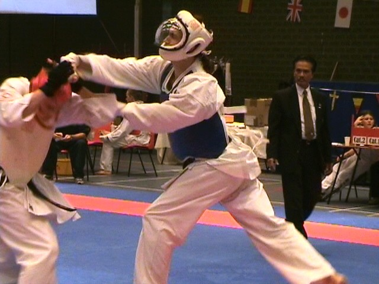 |
| 5-7. From left to right: Sensei
Nobuaki Konno (Genseiryu Netherlands, co-organiser of the
Tournament), Sensei Chiba (9th Dan Goju-Ryu, co-organiser
of the Tournament, Sensei Rob Zwartjes (founder Wado
Ryu Netherlands), Ludwig
Kotzebue oud-wereldkampioen Karate (Wado Ryu) and Sensei
Wim Keijl (co-organiser of the Tournament). By the way, a lot of people thought that the black guy really was Ernesto Hoost (a Dutch K1 kickboxer). Well, the resemblance is indeed remarkable... |
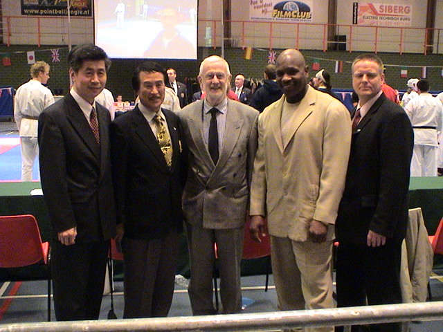 |
| 5-8. Later on that day, we were
honoured by a visit of the Judo legend Anton Geesink,
the first non-Japanese to win a world championship in Judo, winner
of Olympic Gold in Tokyo (1964) and more than once Dutch, European and
World Champion Judo. He is the only still living holder of the 10th Dan
in Judo. Anton Geesink is a member of the board of the Dutch National
Olympic Committee, and a member of the International Olympic Committee
(IOC). |
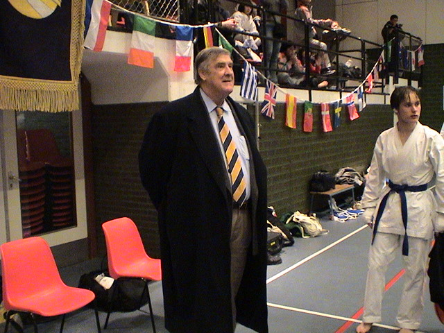 |
| 5-9. Of course with such a legend
'in the house', everybody wants to get a picture of themselves, together
with the famous Anton Geesink. |
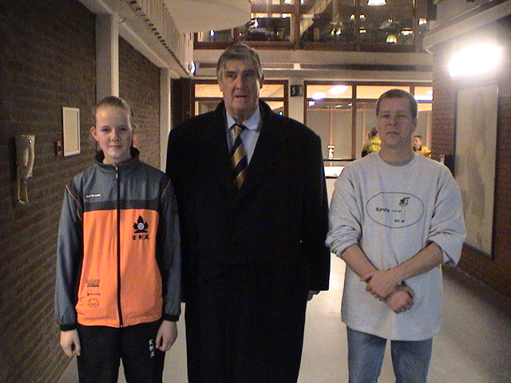 |
| 5-10. Yep, that's me, the webmaster!
God, do I look small compared to Anton Geesink... |
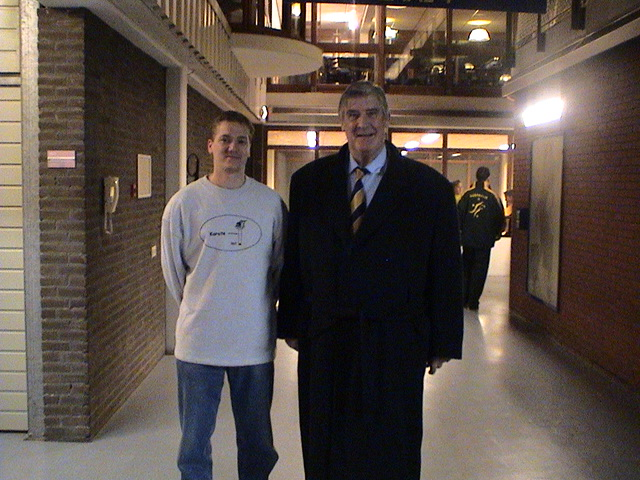 |
| 5-11. Talking about... Karate,
of course! |
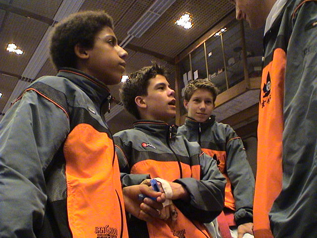 |
| 5-12. Getting kicked on the head
a lot makes you do weird things... ;-) |
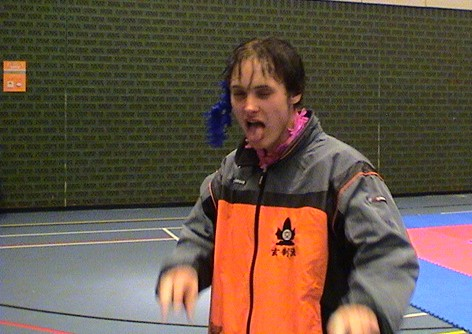 |
| 5-13. Group picture of (most of)
the participants of the KLM Karateclub Amstelveen and Anna Paulowna. From left to right on the top row: Ali Dogan, Joost van Bruggen, Jeroen v.d. Berg, Sharon Appelman, Ciska van der Voort, Bert v.d. Pal and Richard de Waard. Kneeling: Mike Brouwer, Pluk Bakker, Maurice Tehi, Ryan Zwart and Melanie Hertogh. Voor de uitslag van de wedstrijden, klik hier! |
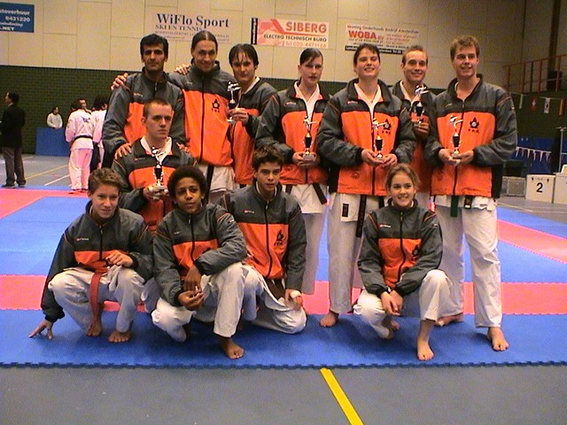 |
|
<< PREVIOUS GALLERY |
NEXT GALLERY >> |
{kind=link}
{kind=link}
{kind=link}
{kind=link}
{kind=link}
{kind=link}
{kind=link}
{kind=link}
{kind=link}
{kind=link}
{kind=link}
{kind=link}
{kind=link}